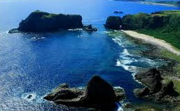

返回綠島導覽地圖

請點選紅色圓圈景點......

綠島舊名火燒島，位於台東市東方約33公里的海面上，面積16.2平方公里，由火山集塊岩所構成的島嶼，因長年受風化及海水侵蝕，形成曲折多變的海岸景觀。
巍峨奇岩巨石、陡峭台地海岸、潔淨的白色沙灘、翠綠草原、獨特的海底溫泉、嶙峋珊瑚礁裙、綺麗海底世界、以及豐盛的植物等優渥的條件，使得綠島這個遺世獨立的小島，搖身一變成東部的海上樂園。
西元1960年起政府積極開發綠島，西元1977年推動改善綠島居民生活5項計畫，增進島內設施，如機場、漁港、環島公路等。
近年來，台東縣政府、觀光局東部海岸國家風景區管理處及綠島鄉公所的共同努力下，將綠島建設成台灣海上的觀光島嶼，成為國人從事水上休閒活動的最佳選擇。然而，在生態保育的思潮帶動下，兼具生態與人文的生態旅遊模式，已漸漸成為旅遊活動的主流。